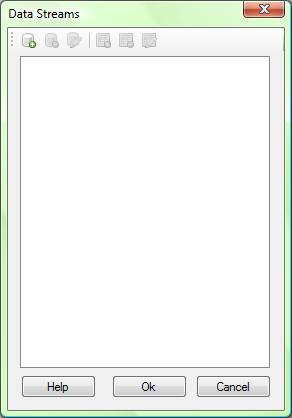

AxiomCoders Template Editor has ability to manage Data Streams and columns so you can easy link dynamic object to corresponding data name.

AxiomCoders Template Editor can manage Data Streams in the following way: